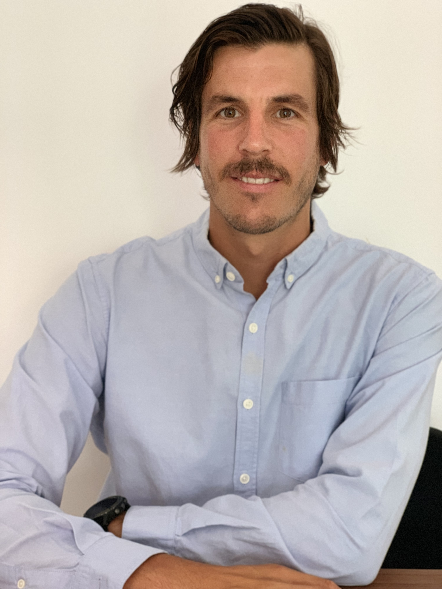
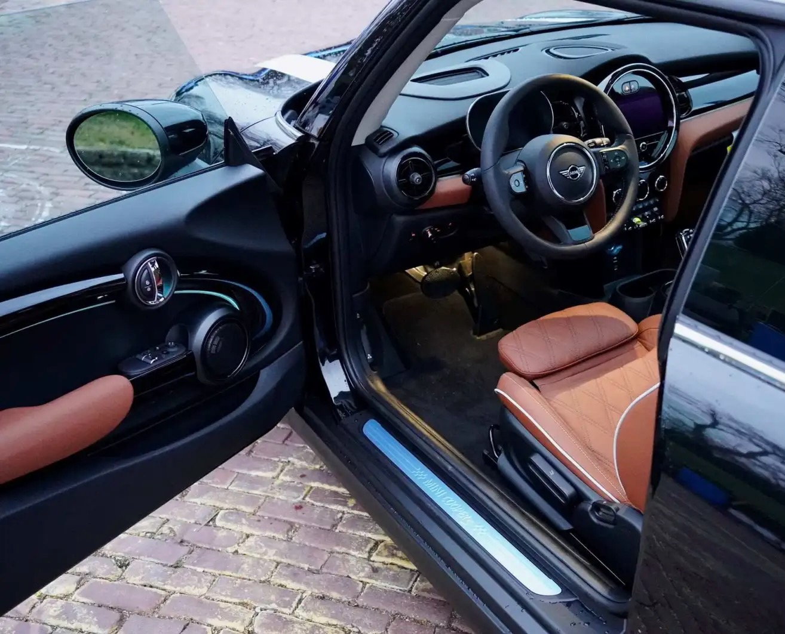
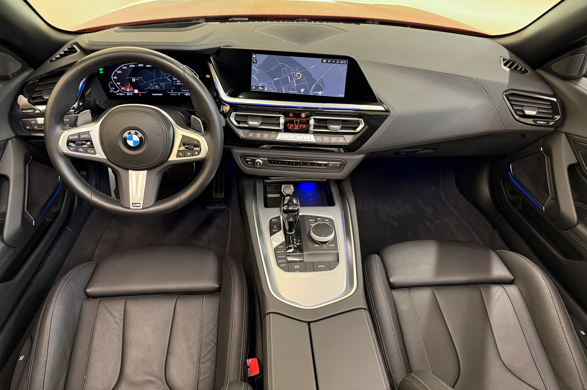
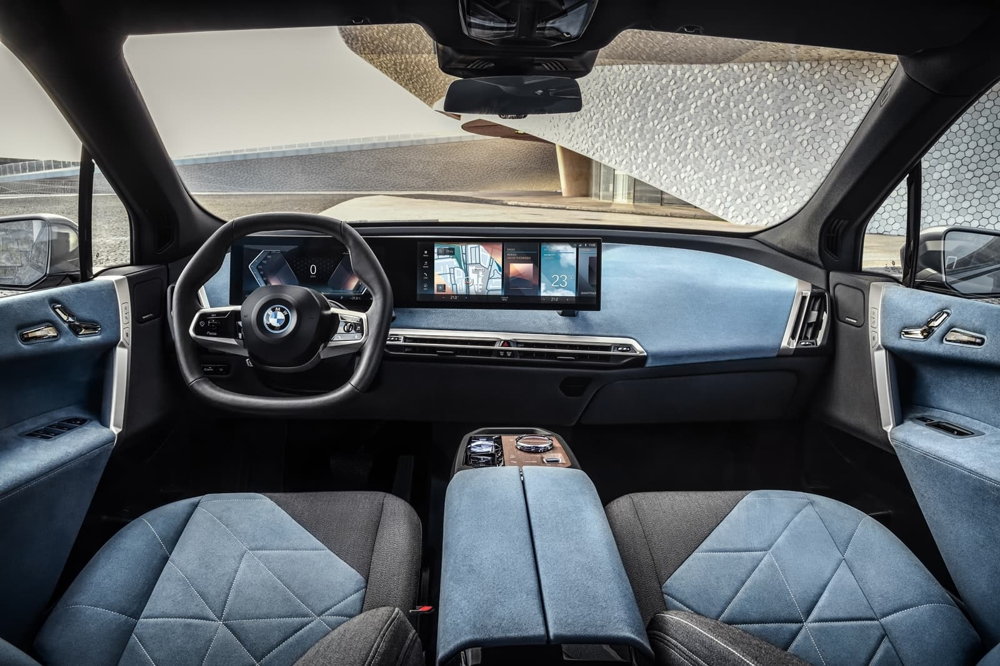
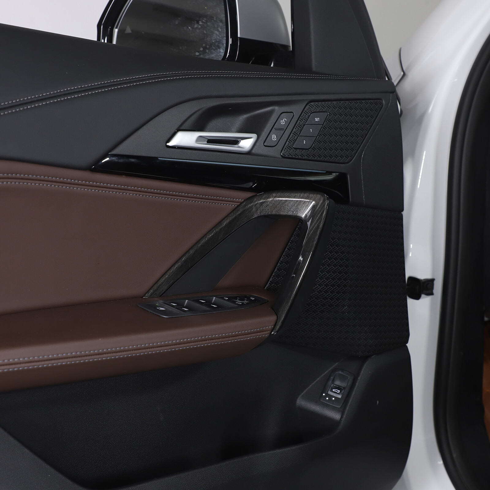
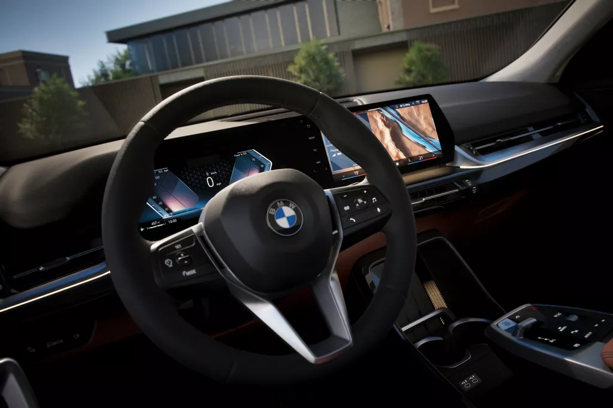
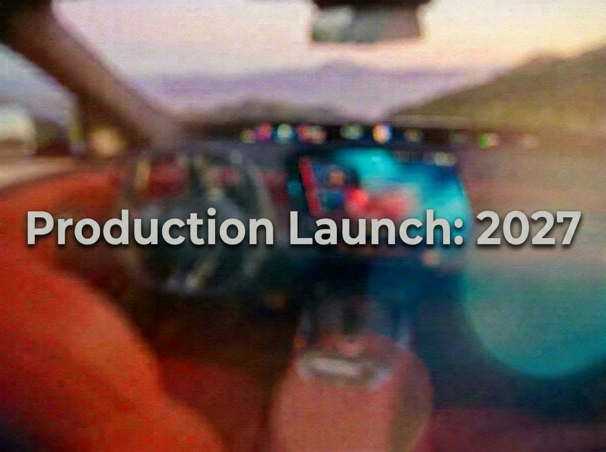
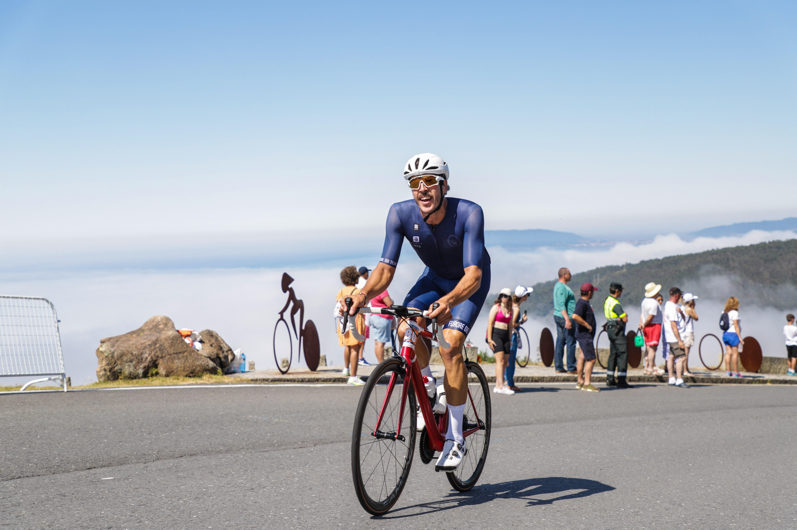

EDU ALONSO
Engineer.
Developer.
Cyclist.
Over a decade developing complex products. A lifetime driven by curiosity and understanding how things work.

About
From A Coruña to Barcelona, through Gijón, Sydney and Munich.
My journey has been shaped by curiosity, engineering, and a constant desire to understand how things work. I was born in A Coruña, studied Mechanical Engineering in Gijón, and later decided to go abroad to broaden my horizons and gain international experience.
Sydney was a period of learning and personal growth. Years later, Munich became the center of my professional development, where I spent more than a decade contribuiting to projects for BMW Group.
Today I live in Barcelona, combining industrial experience with teaching and new projects related to technology, innovation, and continuous learning.
A Coruña
Origin
Gijón
Mechanical Engineering
Sydney
International Experience
Munich
BMW Group
Barcelona
Teaching and New Projects
Career
A professional journey shaped by engineering, product development, automotive projects and teaching.
Mechanical Engineering
Technical education in Gijón, building a strong foundation in product design, manufacturing, materials, industrial processes and product development.
Technical Experience in Australia
Working in international environments, contributing to technical drafting and engineering-related projects while developing a broader perspective on the profession.
BMW Group · Internship
First exposure to the German automotive industry and to large-scale vehicle development processes.
Automotive Product Development
More than ten years contributing to projects for BMW Group, working on the development of interior components for various BMW and MINI vehicle programs.
Teaching
Today I bring that industrial experience into the classroom, helping students and future professionals connect theory with real-world engineering practice.
Projects
More than ten years contributing to development projects for BMW Group, supporting the engineering and development of interior components from the early design stages through industrialisation and production launch.
Throughout these years I worked with international teams across engineering, design, quality, manufacturing and marketing, contributing to several generations of BMW and MINI vehicles.
My role extended beyond technical component development. I also collaborated closely with marketing teams, helping translate engineering decisions and technical solutions into concepts that could be understood and communicated to customers.
MINI COOPER (F56LCI)
Development of interior components, primarily cockpit and door trim systems.

BMW Z4 (G29)
Development of cockpit components and centre console systems.

BMW iX (I20)
Development of cockpit components and technical coordination throughout the different phases of the project.

BMW X1 (U11)
Development of door trim systems and technical project support from design through to production.

BMW X2 (U28)
Development of door trim systems and coordination with suppliers and cross-functional teams.

BMW X1 (U11LCI)
Development of cockpit components and technical definition of interior components.

Beyond Engineering

Contact
If you would like to talk about engineering, automotive development, cycling, education or just exchange ideas, I'll be happy to meet you.
Barcelona · España